The film of the lab report The Orange Queue: the night of 14 to 15 November 2026 as one block diagram, walked arrow by arrow, from the outside in. What closed the connections that night was not found; the film says what the report says and no more. The film is 8:40 long and has no sound. Its narration, 1,126 words, scrolls in the corner at 150 words a minute, the word to be spoken lit, for whoever reads it aloud; the same words are the film's captions. Under it, every one of its 16 arrows as a still, with what moves along it, why, the rule at the border, and what is said.
Each card is one step of the film. The picture is the whole diagram at that moment, with the arrow lit and the small map in its corner showing where the step sits. The button plays that step in the film above.
1. An ordinary day
the queue→a lanea job
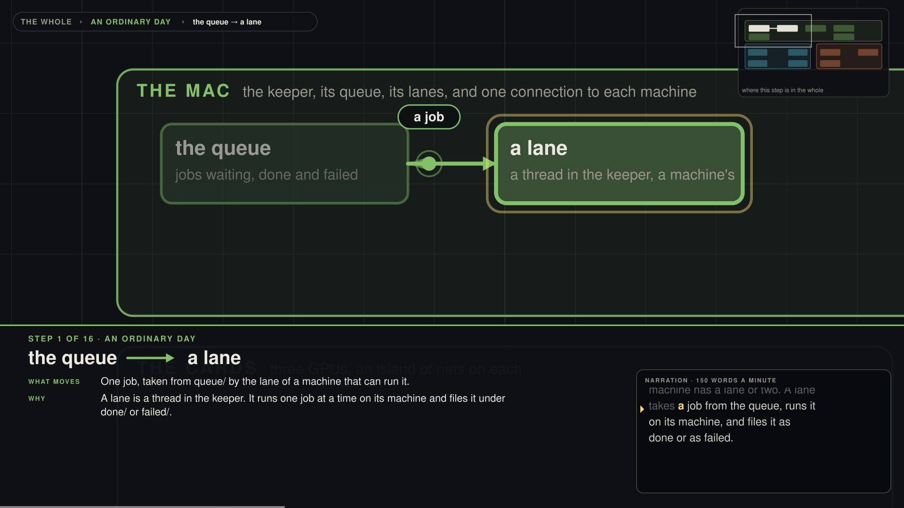
What moves
One job, taken from queue/ by the lane of a machine that can run it.
Why
A lane is a thread in the keeper. It runs one job at a time on its machine and files it under done/ or failed/.
Narration
Start on the Mac. One process, the keeper, owns the queue. Each machine has a lane or two. A lane takes a job from the queue, runs it on its machine, and files it as done or as failed.
2. An ordinary day
a lane→the shared connectionone ssh command
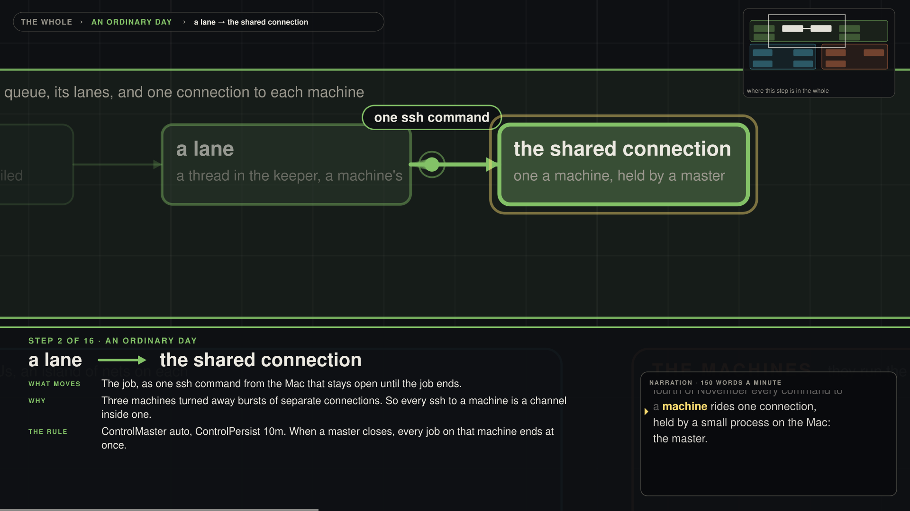
What moves
The job, as one ssh command from the Mac that stays open until the job ends.
Why
Three machines turned away bursts of separate connections. So every ssh to a machine is a channel inside one.
The rule
ControlMaster auto, ControlPersist 10m. When a master closes, every job on that machine ends at once.
Narration
A job runs as one ssh command, open until the job ends. Since the fourth of November every command to a machine rides one connection, held by a small process on the Mac: the master.
3. An ordinary day
the shared connection→a census jobthe command
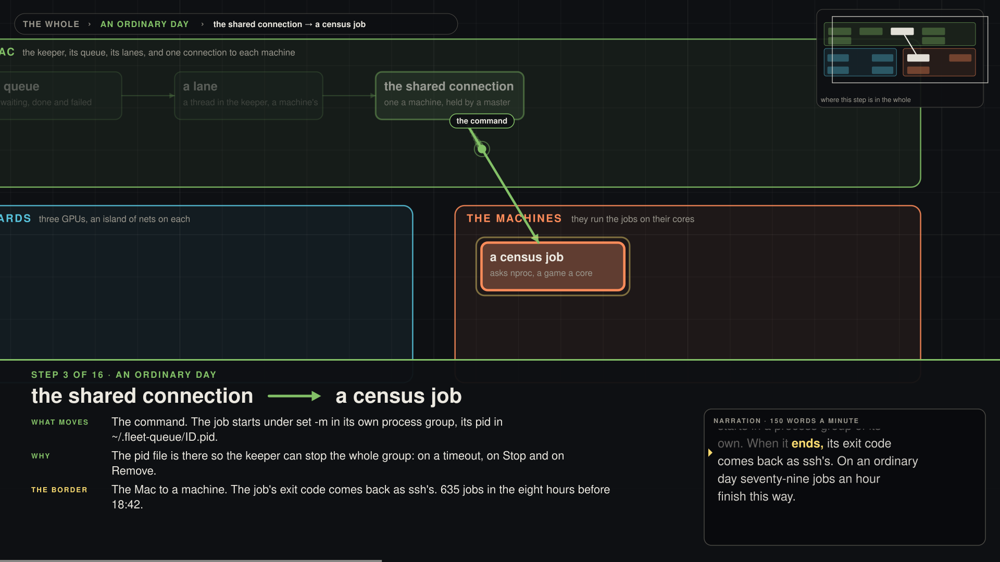
What moves
The command. The job starts under set -m in its own process group, its pid in ~/.fleet-queue/ID.pid.
Why
The pid file is there so the keeper can stop the whole group: on a timeout, on Stop and on Remove.
The border
The Mac to a machine. The job's exit code comes back as ssh's. 635 jobs in the eight hours before 18:42.
Narration
Over that connection the command reaches the machine, and the job starts in a process group of its own. When it ends, its exit code comes back as ssh's. On an ordinary day seventy-nine jobs an hour finish this way.
4. An ordinary day
the shared connection→a segmenta segment's command
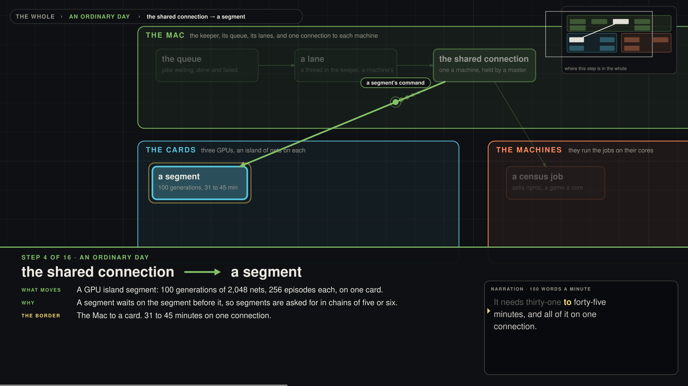
What moves
A GPU island segment: 100 generations of 2,048 nets, 256 episodes each, on one card.
Why
A segment waits on the segment before it, so segments are asked for in chains of five or six.
The border
The Mac to a card. 31 to 45 minutes on one connection.
Narration
A card's work is a segment: a hundred generations of two thousand and forty-eight nets, on one card. It needs thirty-one to forty-five minutes, and all of it on one connection.
5. An ordinary day
a segment→island.statethe population
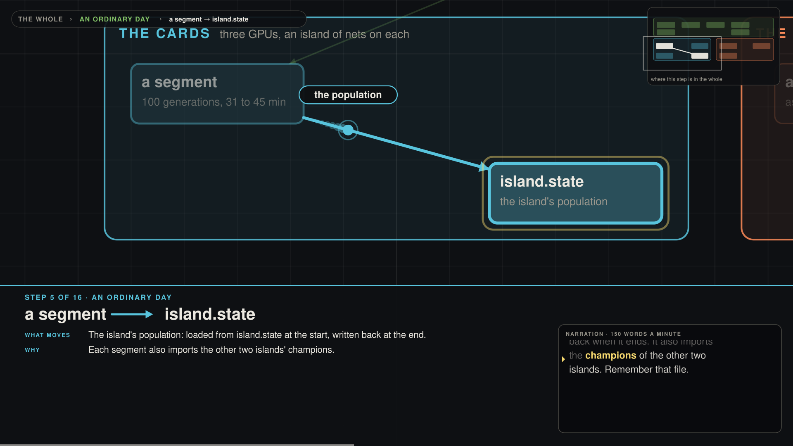
What moves
The island's population: loaded from island.state at the start, written back at the end.
Why
Each segment also imports the other two islands' champions.
Narration
A segment loads the island's saved state when it starts, and writes it back when it ends. It also imports the champions of the other two islands. Remember that file.
6. The night
the housekeeping→the shared connectiona login to every machine
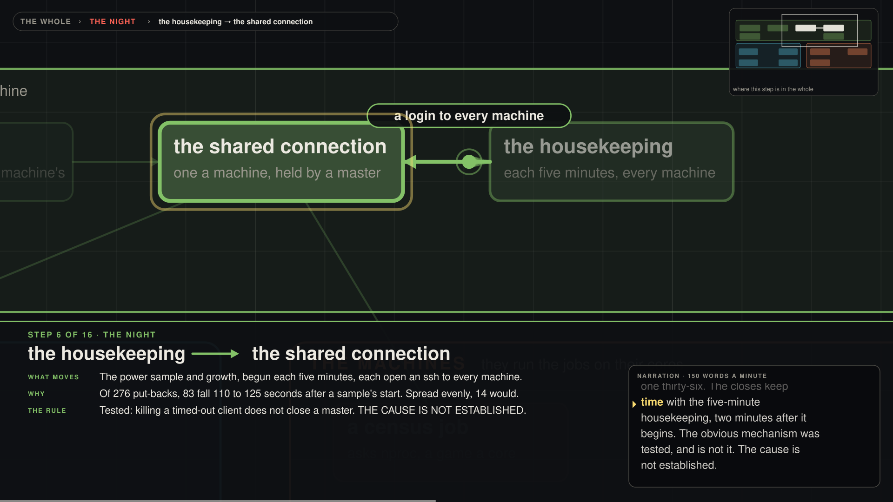
What moves
The power sample and growth, begun each five minutes, each open an ssh to every machine.
Why
Of 276 put-backs, 83 fall 110 to 125 seconds after a sample's start. Spread evenly, 14 would.
The rule
Tested: killing a timed-out client does not close a master. THE CAUSE IS NOT ESTABLISHED.
Narration
At eighteen forty-two the Mac begins closing its own masters: a hundred and twenty-three times by one thirty-six. The closes keep time with the five-minute housekeeping, two minutes after it begins. The obvious mechanism was tested, and is not it. The cause is not established.
7. The night
the shared connection→a lane255
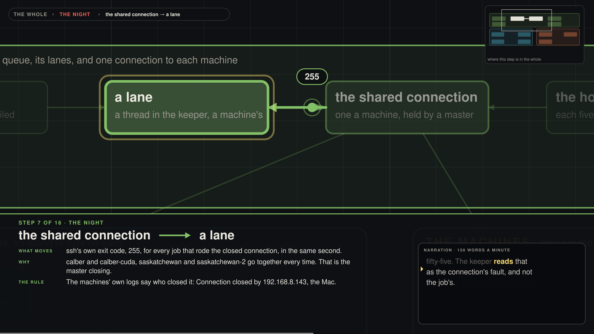
What moves
ssh's own exit code, 255, for every job that rode the closed connection, in the same second.
Why
calber and calber-cuda, saskatchewan and saskatchewan-2 go together every time. That is the master closing.
The rule
The machines' own logs say who closed it: Connection closed by 192.168.8.143, the Mac.
Narration
When a master closes, every job on that machine ends at once, each with ssh's own failure: two fifty-five. The keeper reads that as the connection's fault, and not the job's.
8. The night
a lane→the queuethe job, put back
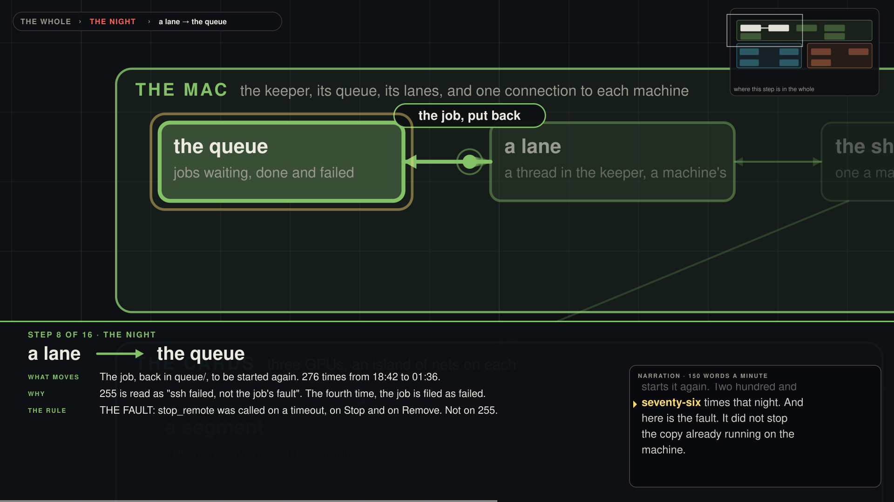
What moves
The job, back in queue/, to be started again. 276 times from 18:42 to 01:36.
Why
255 is read as "ssh failed, not the job's fault". The fourth time, the job is filed as failed.
The rule
THE FAULT: stop_remote was called on a timeout, on Stop and on Remove. Not on 255.
Narration
So the lane puts the job back on the queue, three times at most, and starts it again. Two hundred and seventy-six times that night. And here is the fault. It did not stop the copy already running on the machine.
9. The night
a census job→left behinda copy nobody waits for
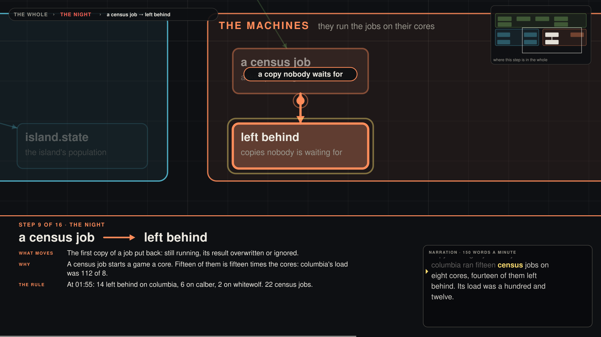
What moves
The first copy of a job put back: still running, its result overwritten or ignored.
Why
A census job starts a game a core. Fifteen of them is fifteen times the cores: columbia's load was 112 of 8.
The rule
At 01:55: 14 left behind on columbia, 6 on calber, 2 on whitewolf. 22 census jobs.
Narration
A closed connection does not stop the job. Each drop left one more copy running. By one fifty-five columbia ran fifteen census jobs on eight cores, fourteen of them left behind. Its load was a hundred and twelve.
10. The night
a segment→copies on the carda copy of a segment
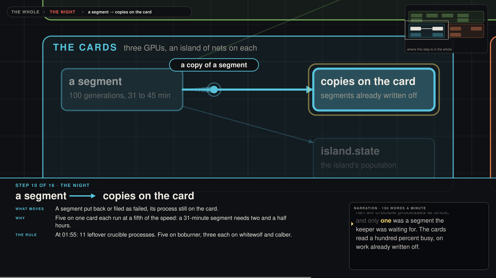
What moves
A segment put back or filed as failed, its process still on the card.
Why
Five on one card each run at a fifth of the speed: a 31-minute segment needs two and a half hours.
The rule
At 01:55: 11 leftover crucible processes. Five on boburner, three each on whitewolf and calber.
Narration
On the cards it was the same. By one fifty-five boburner's one card ran six crucible processes at once, and only one was a segment the keeper was waiting for. The cards read a hundred percent busy, on work already written off.
11. The night
copies on the card→island.statean older population
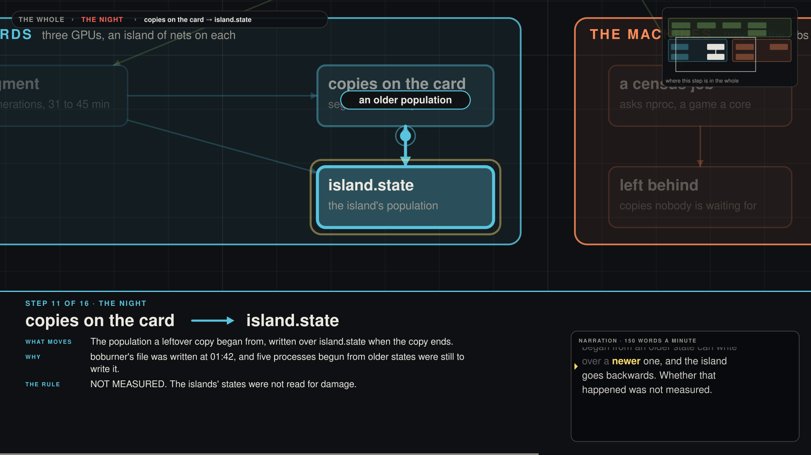
What moves
The population a leftover copy began from, written over island.state when the copy ends.
Why
boburner's file was written at 01:42, and five processes begun from older states were still to write it.
The rule
NOT MEASURED. The islands' states were not read for damage.
Narration
Every copy writes the island's state when it ends. A copy that began from an older state can write over a newer one, and the island goes backwards. Whether that happened was not measured.
12. The night
the planner→a lanea fresh chain
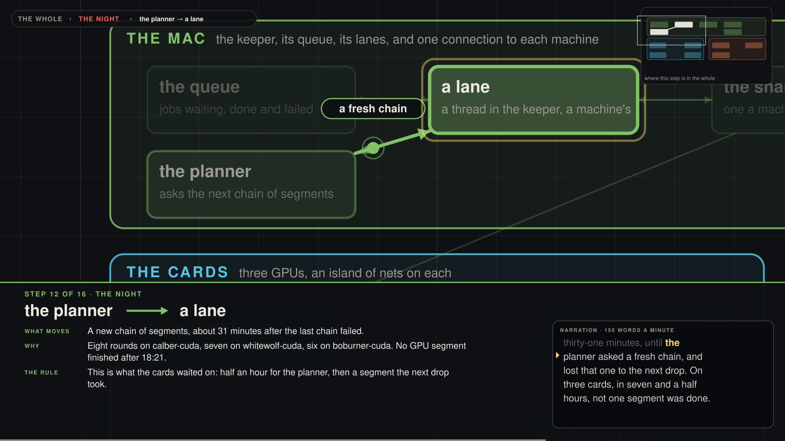
What moves
A new chain of segments, about 31 minutes after the last chain failed.
Why
Eight rounds on calber-cuda, seven on whitewolf-cuda, six on boburner-cuda. No GPU segment finished after 18:21.
The rule
This is what the cards waited on: half an hour for the planner, then a segment the next drop took.
Narration
One failed segment fails the five or six queued behind it. Then the card's lane stood idle about thirty-one minutes, until the planner asked a fresh chain, and lost that one to the next drop. On three cards, in seven and a half hours, not one segment was done.
13. What was built
a lane→a census jobstop the copy
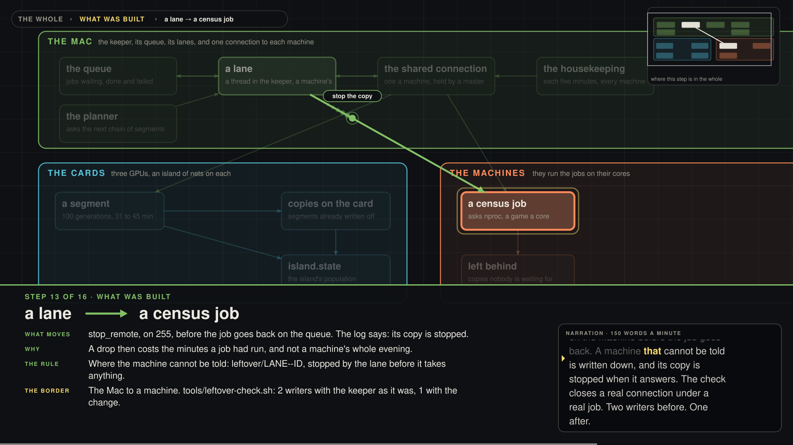
What moves
stop_remote, on 255, before the job goes back on the queue. The log says: its copy is stopped.
Why
A drop then costs the minutes a job had run, and not a machine's whole evening.
The rule
Where the machine cannot be told: leftover/LANE--ID, stopped by the lane before it takes anything.
The border
The Mac to a machine. tools/leftover-check.sh: 2 writers with the keeper as it was, 1 with the change.
Narration
The first change. On two fifty-five, the lane stops the copy on the machine before the job goes back. A machine that cannot be told is written down, and its copy is stopped when it answers. The check closes a real connection under a real job. Two writers before. One after.
14. What was built
a segment→segment.lockthe island's lock
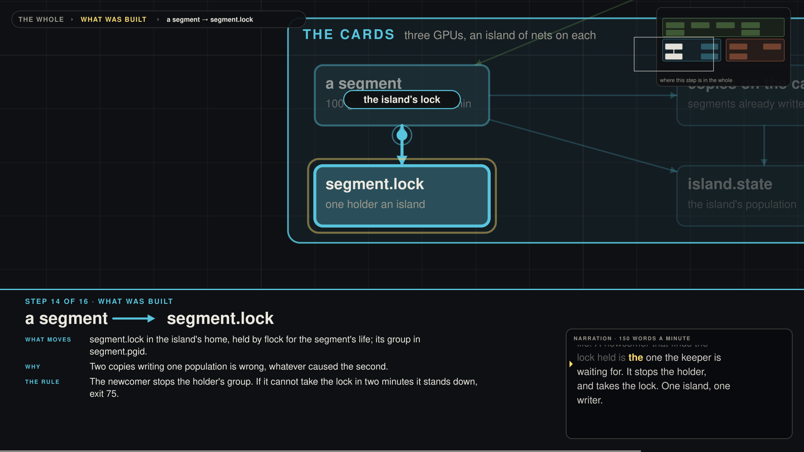
What moves
segment.lock in the island's home, held by flock for the segment's life; its group in segment.pgid.
Why
Two copies writing one population is wrong, whatever caused the second.
The rule
The newcomer stops the holder's group. If it cannot take the lock in two minutes it stands down, exit 75.
Narration
The second change. A segment holds its island's lock for its whole life. A newcomer that finds the lock held is the one the keeper is waiting for. It stops the holder, and takes the lock. One island, one writer.
15. What was built
the sensors→the heat readinga temperature
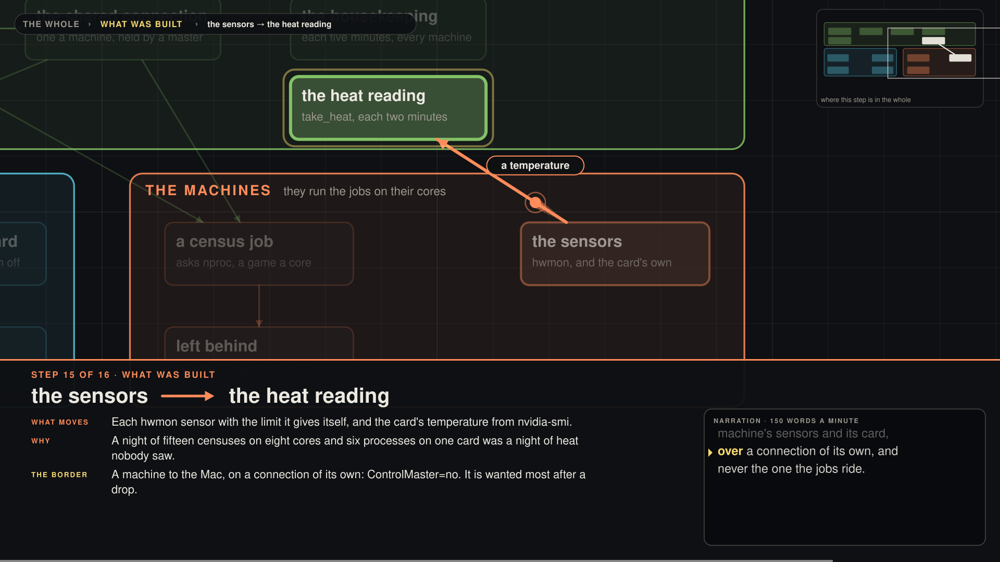
What moves
Each hwmon sensor with the limit it gives itself, and the card's temperature from nvidia-smi.
Why
A night of fifteen censuses on eight cores and six processes on one card was a night of heat nobody saw.
The border
A machine to the Mac, on a connection of its own: ControlMaster=no. It is wanted most after a drop.
Narration
The third. Nothing read a temperature before this. Now, each two minutes, the keeper reads every machine's sensors and its card, over a connection of its own, and never the one the jobs ride.
16. What was built
the heat reading→a lanecooling, or a rest
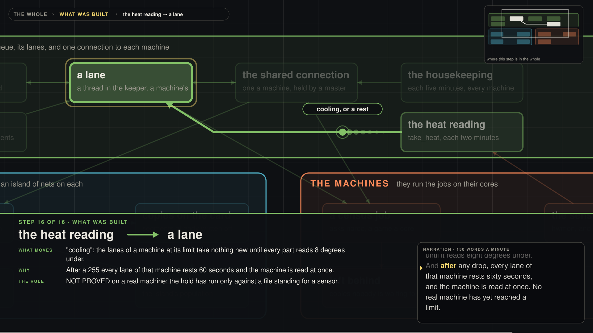
What moves
"cooling": the lanes of a machine at its limit take nothing new until every part reads 8 degrees under.
Why
After a 255 every lane of that machine rests 60 seconds and the machine is read at once.
The rule
NOT PROVED on a real machine: the hold has run only against a file standing for a sensor.
Narration
A machine at its limit finishes the job in hand and takes nothing new, until it reads eight degrees under. And after any drop, every lane of that machine rests sixty seconds, and the machine is read at once. No real machine has yet reached a limit.
How the film is made
The film is one file of words and positions (storyboard.json) drawn by three scripts: tools/report/film.py, what any such film shares, and tools/report/process_film.py, how a block diagram is walked; and tools/report/orange-queue_film.py, this report's own opening and its ledger of what is proved. Every number in it is the report's.
The words first
Each scene is exactly as long as its narration at 150 words a minute, with a breath before and after. A mark in the narration is a cue, and the picture's moves are written against cues, so the picture can never run ahead of what is said.
One stage
The diagram is drawn once, every block in its place for the whole film. Scenes move a camera over it and change what is lit. The viewer learns the map once and is never shown a second one.
A function of time
Every frame is computed from its time alone; nothing accumulates. A property is a tween between two times on an easing curve. So any frame renders by itself, a still for this page is the same call as a frame of the film, and the frames render in any order: here by two processes, the Mac being the fleet's coordinator.
Gather, go, land
A move has three parts. The source dips as the token sets out, the token eases away and eases in with a trail behind it, the destination swells as it arrives. One thing moves at a time; a row of words rises into place only while nothing else is moving.
The border
Where an arrow leaves one territory a ring opens on the border, and the token takes the colour of the territory it enters: what crosses is no longer the first territory's.
The cold open
Before the title, a true thing that should not be possible: three graphics cards 100% busy for seven and a half hours that finished no segment; then why (each hour's jobs done and jobs put back, with the 123 closes and the 276 put-backs); then the report's own picture of the day, and that the cause is not found.
Outside in
After the title it opens far off on the whole, names three territories, then the one border and what crosses it, then goes inside: an ordinary day, the night, and what was built after. Each step carries the path down to it in the top left and a small map of the whole in the top right, so no step is seen out of its place.
The ledger
Before the close, two columns: what a check has shown, and what none has. The cause of the closes is in the second.
Pace
A step runs 12 to 24 seconds: the camera arrives in a second and a half, the arrow draws, the token travels for 3.4 seconds and sets out again every 5.6 while the step is told; what moves appears at 2.8 seconds, why at 5, the rule at 7, the border at 8.